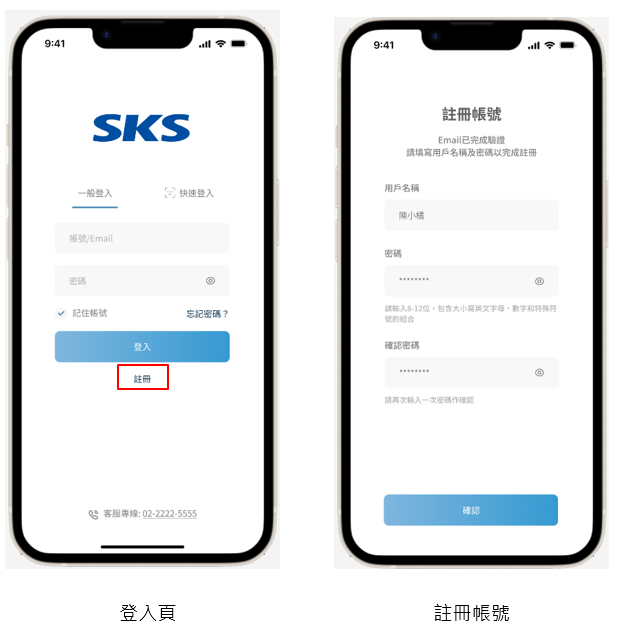
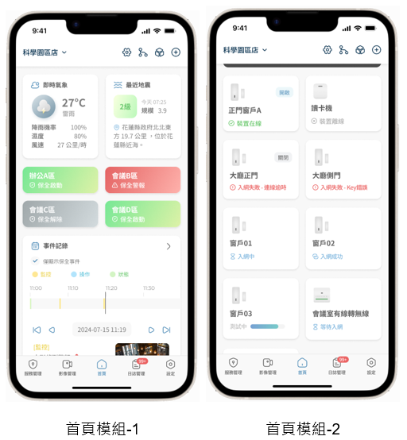
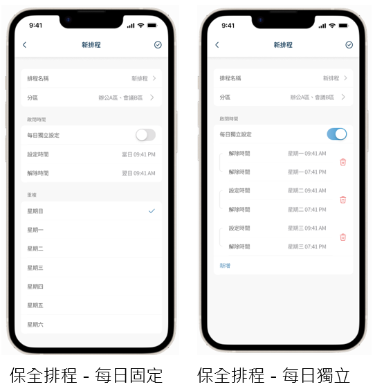
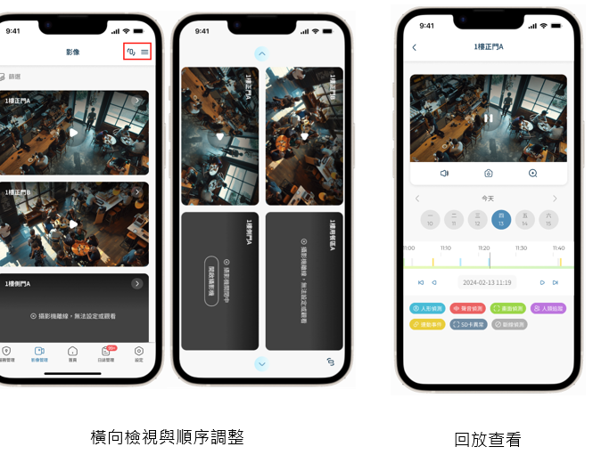
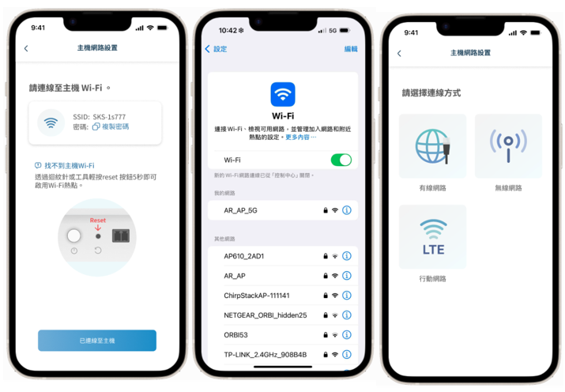
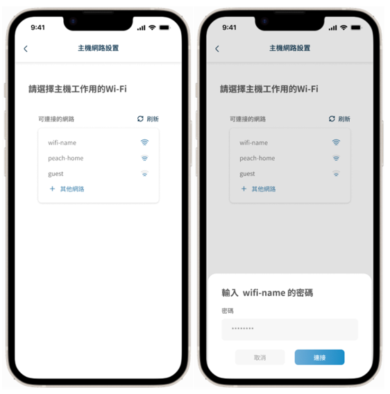
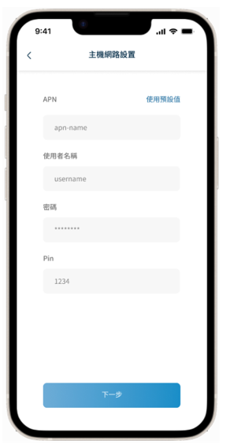

SKS Spaces 快速使用手冊
找不到「」的相關內容
1
APP 下載與帳號登入
📲 下載安裝
- iOS：於 App Store 搜尋「SKS Spaces」→ 點擊下載
- Android：於 Google Play 搜尋「SKS Spaces」→ 點擊安裝
👤 首次使用：帳號註冊
- 開啟 APP，點擊登入頁下方的「註冊」
- 填入用戶名稱、電子郵件（或手機號碼）
- 設定密碼（8–12 位，含大小寫英文、數字及特殊符號）
- 再次輸入確認密碼 → 點擊「確認」完成

左：登入頁 右：帳號註冊
🔑 一般登入
- 輸入帳號與密碼 → 點擊「登入」
- 或使用生物識別（Face ID / 指紋）快速登入
🔓 忘記密碼
- 於登入頁選擇「忘記密碼？」
- 輸入 Email 或手機號碼接收驗證碼
- 驗證後設定新密碼即完成
契約用戶注意：帳號由新光保全工程人員建立，首次登入後請自行修改密碼以確保帳號安全。
2
首頁功能導覽
首頁以模組化卡片呈現，您可依需求調整顯示內容。

左：首頁模組總覽 右：設備列表模組
🧩 六大核心模組
| 模組名稱 | 功能說明 |
|---|---|
| 區域風險 | 整合氣象局資料，即時顯示天氣、降雨、地震警報（含規模與距離） |
| 近期事件 | 重要警報即時通知、系統異常提示 |
| 裝置小卡 | 單一設備狀態卡片，顯示在線 / 離線 / 觸發狀態 |
| 裝置列表 | 所有已綁定設備總覽，快速切換查看 |
| 攝影機快播 | 一鍵開啟即時影像；橫向旋轉最多同時顯示 4 路 |
| 保全狀態 | 顯示各分區目前狀態（見下方說明） |
🛡️ 保全狀態指示
- ● 綠色 保全已啟動
- ● 灰色 保全已解除
- ● 紅色 目前警報中
⚡ 頂部快捷按鈕（右上角）
- ⚙️ 設定
- 📡 設備拓樸圖
- 🛡️ 授權管理
- ➕ 新增設備
3
保全操作
🤚 手動操作
啟動分區保全
- 點擊首頁對應分區的灰色盾牌圖示
- 系統自動檢查條件（門磁關閉、感測器正常）
- 條件符合 → 盾牌轉為綠色，保全啟動
- 條件不符 → 顯示無法啟動的設備清單，確認後重試
解除分區保全
- 點擊綠色盾牌圖示
- 盾牌轉為灰色，保全解除
解除警報
- 點擊紅色警示圖示
- 警報解除，圖示恢復灰色
全區設定 / 全區解除
- 底部導覽 → 服務管理
- 選擇「全區設定」或「全區解除」
- 系統顯示各分區執行結果（成功 / 失敗原因）
啟動保全前請確認所有門窗均已關閉，否則系統將提示無法啟動，並列出未關閉的設備清單。
🕐 自動排程
路徑：服務管理 → 生效中的排程 → 新增排程

左：每日固定排程 右：每日獨立排程
| 排程類型 | 適用情境 |
|---|---|
| 每日固定 | 每天相同時間自動啟動 / 解除，適合固定作息場域 |
| 每日獨立 | 各天可設定不同時間，彈性對應不同班表 |
排程設定後系統自動切換保全狀態，無需每天手動操作，有效避免遺漏。
4
攝影機監控與影像回放
📺 即時影像
- 底部導覽列 → 影像管理
- 點擊攝影機名稱 → 開啟單路即時影像
- 手機橫向旋轉 → 最多同時查看 4 路影像
- 長按攝影機卡片可拖曳調整排列順序
⏪ 影像回放
- 進入單一攝影機頁面
- 切換至回放模式
- 透過時間軸拖曳選取要查看的時段
- 依事件類型篩選：人形偵測、移動偵測、門磁事件、SD 卡異常等

左：橫向多路監視 右：影像回放與事件篩選
💾 錄影規格
| 類型 | 儲存天數 | 說明 |
|---|---|---|
| 全時錄影（SD 卡） | 約 14 天 | 標準模式，256GB Micro SD 卡 |
| 事件錄影（雲端） | 30 天 | 前 10 秒＋後 20 秒，最多 300 筆 |
| 事件錄影（SD 卡） | 容量滿後自動覆蓋 | 前 10 秒＋後 20 秒 |
雙重備援：雲端與 SD 卡同步儲存，網路中斷時本地端仍持續錄影，確保影像證據不遺失。
5
日誌查詢
路徑：底部導覽列 → 日誌管理
🔍 篩選選項
- 事件類型（警報 / 操作 / 狀態）
- 裝置類型（感測器 / 攝影機 / 主機）
- 日期範圍、操作者帳號
📋 讀取技巧
- 勾選「僅顯示保全事件」→ 快速聚焦警報紀錄
- 帶有 📷 圖示的日誌 → 點擊可直接查看對應影像片段
- 保全事件以 ⚠️ 標示，緊急狀況一眼辨識
📌 紀錄內容範圍
- 保全啟用 / 解除紀錄（含操作者與時間）
- 感測器觸發事件（設備名稱、時間、狀態）
- 攝影機人形偵測、移動偵測影像
- 主機操作：備份、系統更新、網路切換
- 非法刷卡紀錄
若日誌頁面無資料，請先取消所有篩選條件，並擴大日期範圍後重新查詢。
6
設備綁定
🖥️ 新增主機
- 首頁右上角 → ＋（新增設備）
- 選擇「主機」→ 輸入主機序號或掃描主機背面 QR Code
- 設定主機名稱與地點
- 依步驟完成網路設定（Wi-Fi / 有線 / LTE）
📡 新增感測器（門磁 / PIR / 緊急按鈕等）
- 進入主機管理 → 選擇「新增感測器」
- 開啟感測器電源（安裝電池）
- 掃描感測器背面或螢幕上的 QR Code
- 設定名稱、所屬分區、連動攝影機
- 等候約 1.5 分鐘完成入網，LED 停止閃爍即代表成功
若 QR Code 模糊無法掃描，請打開感測器後蓋，掃描內蓋上的備用 QR Code。
📷 新增攝影機（IPcam）
- 進入主機管理 → 選擇「新增攝影機」
- 選擇連線方式（Wi-Fi 或 有線 PoE）
- 依 APP 引導掃描並完成綁定
🔧 新增 WDI（有線無線轉換器）
- 接通 24V 電源適配器
- 掃描 WDI 設備上的 QR Code
- 設定各乾接點埠位對應的感測器名稱與所屬分區
📊 設備拓樸圖
首頁右上角 → 拓樸圖示，可視化查看所有設備架構與即時連線狀態。
7
授權管理
路徑：設定 → 授權
➕ 新增授權
- 點擊「新增」
- 選擇授權方式：
- 掃描 QR Code：掃描被授權人帳號的 QR Code
- Email 輸入：直接輸入被授權人帳號
- 設定授權範圍（地點 / 分區）
- 選擇「永久授權」或指定到期日期
🏷️ 授權狀態說明
| 狀態 | 說明 |
|---|---|
| 永久授權 | 長期有效，無使用期限 |
| 授權至 yyyy-mm-dd | 限期有效，到期自動失效 |
| 授權到期 | 已超過有效期，需重新授權 |
| 已停用 | 擁有者手動停用，可重新啟用 |
8
主機網路設定
路徑：設定 → 設備列表 → 主機 → 網路設定

Wi-Fi 連線設定流程與連線方式選擇
📶 Wi-Fi 無線網路
- 選擇「無線網路」
- APP 掃描可用 Wi-Fi 清單
- 點選 SSID → 輸入密碼 → 點擊「連接」

選擇 Wi-Fi 網路並輸入密碼
主機僅支援 2.4GHz Wi-Fi 頻段，若路由器為 5GHz 請切換至 2.4GHz 再試。
🔌 有線 Ethernet
- 選擇「有線網路」
- 網路線接 WAN Port
- 可設定 DHCP（自動取得）或 Static IP（固定 IP）
- 適用場景：需要穩定連線的商辦環境
📱 4G LTE 行動網路
- 選擇「行動網路」
- 插入 Nano SIM 卡
- 設定 APN 名稱、使用者名稱、密碼、Pin 碼
- 點擊「下一步」完成設定

4G LTE APN 設定畫面
4G LTE 備援機制：LTE 僅在有線和 Wi-Fi 均斷線時自動啟用，確保系統在任何網路狀況下持續運作。
📟 主機螢幕顯示
主機螢幕即時顯示訊號強度、保全狀態、時間、電量，可直接在現場確認系統狀態。
9
硬體設備一覽
🖥️ SGW-10-1 無線保全主機
系統核心，整合感測器與攝影機管理，支援 Wi-Fi / 有線 / 4G LTE 三網備援。
💳 SCR-10-1 無線讀卡機
刷卡布防 / 解防，螢幕即時顯示系統狀態與時間。
🚪 SDS-10-1 無線門磁感應器
偵測門窗開 / 關狀態，觸發即時警報通知。
🔍 SPIR-10-1 無線 PIR 位移偵測器
被動紅外線偵測空間內人員移動，廣角覆蓋。
🆘 SPB-10-1 無線緊急按鈕
按壓 5 秒觸發緊急警報，適用於緊急求援場景。
🔧 SWDI-10-1 有線無線轉換器
整合既有有線感測器，提供 8 組乾接點輸入，輕鬆升級舊系統。
✅ 感測器共同特性
- Ultra Range 無線通訊協定，通訊距離 >2 km（空曠環境）
- IP66 防水防塵，抗 UV 材質外殼（不易泛黃）
- 防拆保護：拆機即觸發警報，防止惡意破壞
- 支援 OTA 遠端韌體更新
- APP 掃描 QR Code 快速入網
- LED 指示燈顯示連線 / 觸發 / 入網狀態
10
常見問題排除
📱 APP 操作問題
無法啟動保全，系統顯示設備清單
原因：有感測器未關閉（如門磁開啟）或設備離線。
解法：確認所有門窗已關閉，逐一確認提示清單中的設備狀態後重試。
原因：有感測器未關閉（如門磁開啟）或設備離線。
解法：確認所有門窗已關閉，逐一確認提示清單中的設備狀態後重試。
攝影機畫面無法觀看
原因：攝影機離線或網路連線異常。
解法：確認攝影機電源與網路狀態，點右上角重新整理，或重啟攝影機。
原因：攝影機離線或網路連線異常。
解法：確認攝影機電源與網路狀態，點右上角重新整理，或重啟攝影機。
APP 未收到推播通知
原因：手機推播設定被關閉或 APP 背景執行受限。
解法：手機「設定」→「通知」→「SKS Spaces」→ 開啟允許通知。
原因：手機推播設定被關閉或 APP 背景執行受限。
解法：手機「設定」→「通知」→「SKS Spaces」→ 開啟允許通知。
日誌頁面沒有顯示任何資料
原因：篩選條件過嚴，或日期範圍不包含事件。
解法：取消所有篩選條件，擴大日期範圍後重新查詢。
原因：篩選條件過嚴，或日期範圍不包含事件。
解法：取消所有篩選條件，擴大日期範圍後重新查詢。
🔧 硬體問題
感測器無法入網 / LED 持續閃爍超過 60 秒
原因：電池電量不足或 QR Code 模糊。
解法：更換新電池（CR123A）；QR Code 模糊時，開後蓋掃內蓋備用 QR Code。
原因：電池電量不足或 QR Code 模糊。
解法：更換新電池（CR123A）；QR Code 模糊時，開後蓋掃內蓋備用 QR Code。
緊急按鈕按下無反應
原因：電池接觸不良、電量不足，或設備死機。
解法：重新安裝電池；若仍無反應，長按 Reset 10 秒以上（LED 閃爍 3 次）恢復出廠設定後重新配對。
原因：電池接觸不良、電量不足，或設備死機。
解法：重新安裝電池；若仍無反應，長按 Reset 10 秒以上（LED 閃爍 3 次）恢復出廠設定後重新配對。
讀卡機螢幕顯示「連線異常」
原因：主機網路中斷或 Ultra Range 訊號干擾。
解法：確認主機網路連線正常，縮短與主機距離或排除干擾源；持續異常請聯絡客服。
原因：主機網路中斷或 Ultra Range 訊號干擾。
解法：確認主機網路連線正常，縮短與主機距離或排除干擾源；持續異常請聯絡客服。
主機無法連接 Wi-Fi
原因：SSID 或密碼錯誤，或路由器使用 5GHz 頻段。
解法：APP 中重新執行 Wi-Fi 設定；若為 5GHz 路由器，請改用 2.4GHz。
原因：SSID 或密碼錯誤，或路由器使用 5GHz 頻段。
解法：APP 中重新執行 Wi-Fi 設定；若為 5GHz 路由器，請改用 2.4GHz。
📞 聯絡新光保全客服中心
提供客服以下資訊以便快速協助：
- 📋 主機序號
- 🕐 發生時間
- 📸 日誌截圖